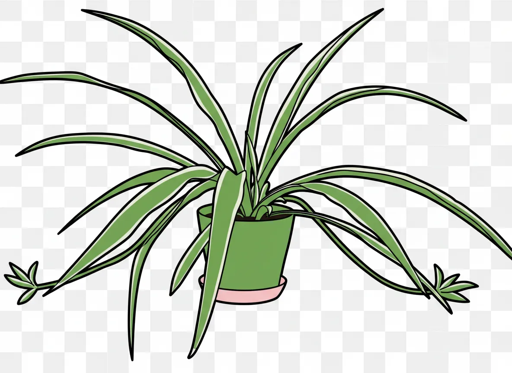
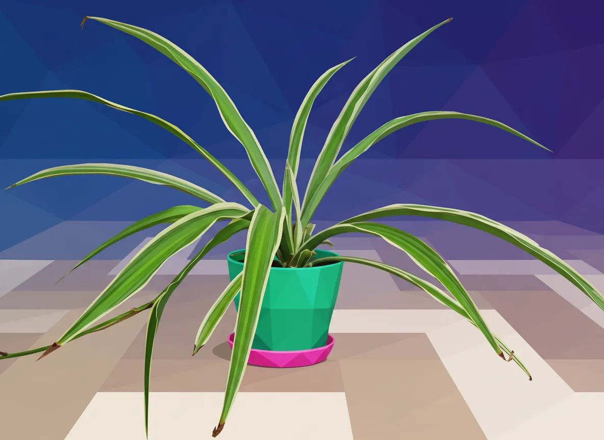
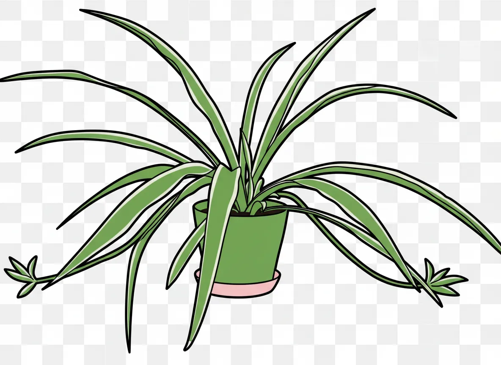
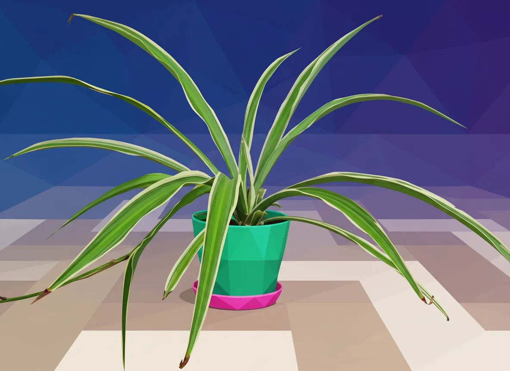

Plant Mood
Breaking News: Local Chlorophytum comosum, known to associates as 'Spider Plant,' has reportedly mastered the art of passive-aggressive expansion. Sources close to the foliage confirm its tendrils are now actively seeking new territories, specifically the pristine, unblemished sections of the living room floor. Authorities advise immediate repotting or, failing that, strategic deployment of tiny, plant-sized roadblocks. More at 11, assuming the plant hasn't occupied the broadcast tower by then.

 


